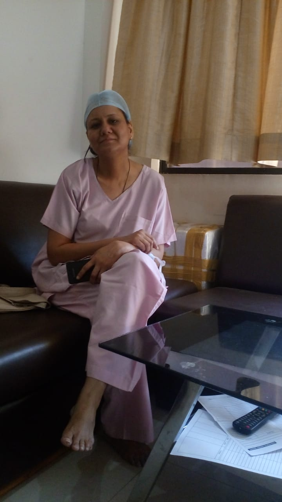
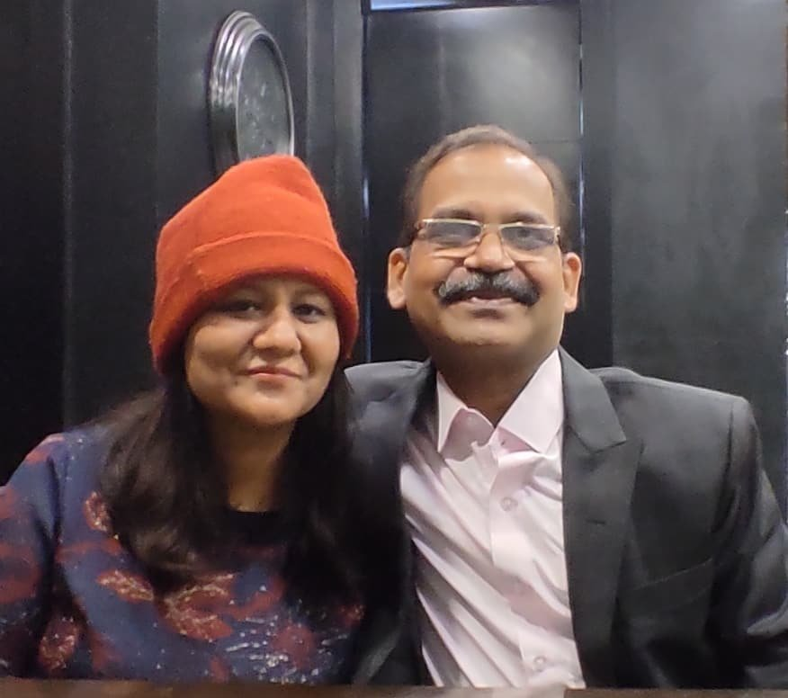

Orthopedic Surgeon · Fracture, Bone & Joint Specialist
|
Phone: +91 97537 80225 · 98260 80225 Dr. Anish Jain is a highly experienced orthopedic surgeon practicing at Chirayu Clinic in Gumasta Nagar, Indore. With over 25 years of surgical experience, he specializes in fracture management, joint replacement surgery, arthroscopy, and trauma care for patients of all ages. He completed his MBBS from Gandhi Medical College, Bhopal (1996) and Diploma in Orthopaedics from the same institution (2002). He is a registered member of the Madhya Pradesh Medical Council and affiliated with professional bodies including IMA, IOA, BOS, and IAS. Areas of Expertise
Chirayu Clinic also participates in the Ayushman Bharat (Ayushman Yojana) scheme, making joint replacement and orthopedic care accessible to eligible patients. Consulting Hours: Monday – Saturday, 9 AM – 12 PM & 5 – 8 PM (Sunday closed) |
ENT Surgeon · Ear, Nose & Throat Specialist
|
 |
Phone: +91 97537 80225 · 91111 80225 Dr. Rashmi Jain is an experienced ENT (Ear, Nose & Throat) surgeon at Chirayu Clinic, Indore. With over 25 years of clinical experience, she provides comprehensive care for ENT conditions ranging from common infections to advanced surgical procedures. She completed her MBBS from MGM Medical College, Indore (1997) and Diploma in Otorhinolaryngology (DLO) from MGM Medical College (2001). She is registered with the Madhya Pradesh Medical Council. Areas of Expertise
Chirayu Clinic is equipped with ENT endoscopy facilities on-site, allowing accurate diagnosis and timely treatment without the need to visit multiple centres. Consulting Hours: Monday – Saturday, 9 AM – 12 PM & 5 – 8 PM (Sunday closed) |

Dr. Anish Jain & Dr. Rashmi Jain — founders of Chirayu Clinic